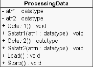

Processing Data Objects
All data in a DSPOOM model is contained in Processing Data
objects, a concept that is related to the Payloads pattern
explained in section 1.5.3.
DSPOOM Processing objects can only process Processing Data objects.
To be fully usable in such a context, a Processing Data class must
offer a number of services, namely:
- Introspection: A Processing Data object must be able to
respond when queried about the number of attributes it holds and their
type. It must also be able to know its own type or class name.
- Homogeneous interface: All Processing Data classes must
have a homogeneous interface so as to be queried transparently without
any knowledge of the concrete subclass.
- Encapsulation: Attributes must be protected and access
to them only given through appropriate setters and getters.
- Persistence: A Processing Data must have automatically
built-in persistence into an appropriate format.
- Display facilities: Any Processing Data must be accompanied
by display facilities that allow for debugging and visualizing its
content at any time.
- Composition: An attribute of a Processing Data class may
be another processing data.
Note that many of these requirements are related to the services offered
by MOF meta-objects (see section 1.4.3).
Figure 4.6:
Processing Data Class
|

|
Subsections
2004-10-18